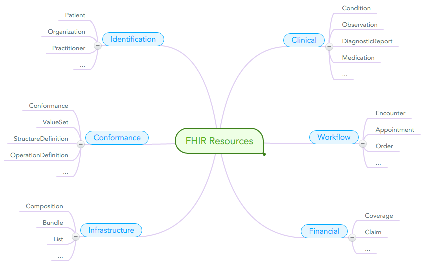
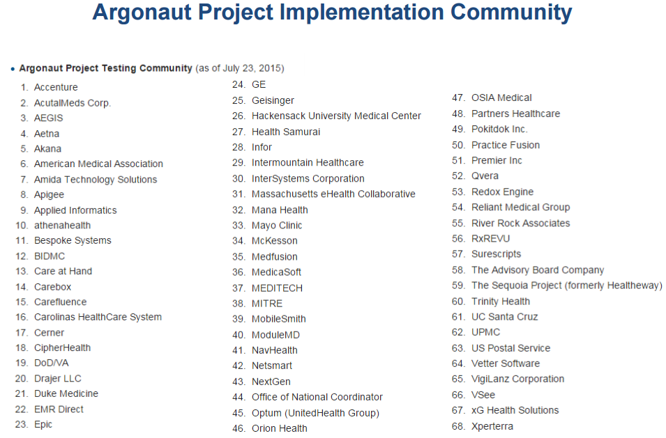
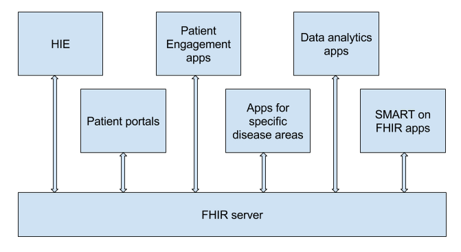
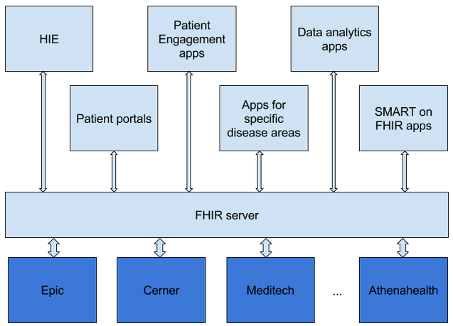

Health Samurai
fostering simplicity in a healthcare domain
State of Interoperability: FHIR, FHIR platforms and their benefits
Why do we need interoperability standards?
HL7 v. 3

FHIR®
Fast
Healthcare
Interoperability
Resources
FHIR solutions are built from a set of modular components called "Resources" 
80/20 with extensions

Why FHIR is better?
- A strong focus on implementation – fast and easy to implement
- Require human readability as base level of interoperability
- Specification is free for use with no restrictions
- Interoperability out-of-the-box
- Strong foundation in Web standards – XML, JSON, HTTPS, OAuth, etc
- Concise and easily understood specifications
- Access to granular info about patient health
Why FHIR is better?
- Huge community
- A lot of tools including open-source
- No vendor lock-in
- Guidance for developers that do not have healthcare IT experience
- It enables innovation
Why now?
FHIR is becoming the de-facto standard for health IT
Supported by ONC & CMS

A Shared Nationwide Interoperability Roadmap recommends FHIR for exchanging clinical data in 2017
CMS Stage 3 final rule has references to FHIR and Argonaut when speaking about ONC certified API each EHR should have.
Supported by vendors and providers
Apps
Hundreds of apps are developed
Thousands of apps will be developed in the next few years
Milestones
- before 2011 … dark age of health IT
- 2011 … FHIR standard was introduced
- 2013 … FHIR DSTU1 was released
- 2014 … Argonaut project was started
- 2015 … ONC included FHIR into interoperability roadmap, FHIR DSTU2 was released
- 2016 … Cerner, Epic and athenahealth release SMART on FHIR app stores
- 2017 … All major EHRs expose data via FHIR API
Why FHIR platform?
You can add new apps or new functionality to the apps without changing of the back-end - FHIR offers a full data model for healthcare
Why FHIR platform?
EHR Integrations are easier - via native FHIR API or well documented mapping between FHIR and HL7 v.2/CDA
Why FHIR platform?

Different vendors or development teams can design apps sharing the same back-end with minimal coordination efforts
What can you build on top of the FHIR platform?
- patient portals
- apps targeting specific disease areas
- patient engagement apps
- data analytics apps
- HIE solutions
- SMART on FHIR apps
Resources about FHIR
News
Community
- FHIR chat
- HL7 conferences, FHIR Applications Roundtables, Partners In Interoperability
- FHIR connectathons
- Healthcare Services Platform Consortium
ONC/CMS
EHR Vendors
- Project Argonaut
- Epic
- Cerner
- Developer portals at Allscripts, athenahealth sites etc
SMART on FHIR, CDS hooks
Health Samurai
Pavel Smirnov
(818)731-1279